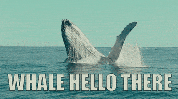
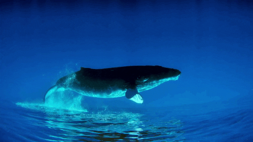
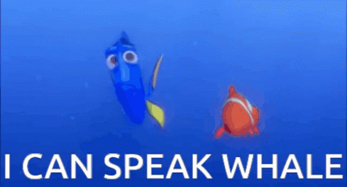

By Sydney Manno
WHALES

Some Fun Whale Facts
The Blue Whale is the largest living animal! They can grow to 90 feet long or more and weigh more than 330,000 pounds! (That's as much as 24 elephants)
Killer Whales are very social animals that travel in groups that are Matrifocal - meaning they center around the mother.
Beluga Whales have the nickname, "canaries of the sea" because of their complex communication combination of whistles, clicks and chirps!
Gray Whales have the longest migration period of any animal. They make a round trip once a year about 10,000 miles long!

Killer Whales, otherwise known as orcas, and other aquatic mammals for years have been taken and held in captivity for the sake of entertainment in aquariums and other locations around the world.
Unfortunately, Whales don't live as long in captivity compared to living in the wild.
The average lifespan of a Killer Whale in captivity is around 15 years while their lifespan in the wild is 60-80 years.
On top of having a shorter lifespan, most whales are kept isolated and in small tanks while being stored in captavity, causing separation anxiety and loneliness in these beautiful creatures.
For more information and on ways you can help, click HERE
As there are so many beautiful and different species of whales, CLICK HERE to learn more about them!
